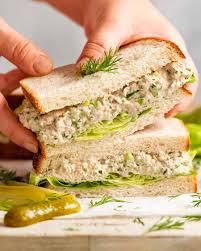

Back To Home
Tuna Sandwich

Simple, satisfying, and packed with flavor, this classic tuna sandwich is a timeless favorite. Made with creamy tuna salad seasoned to perfection and layered between slices of fresh bread, it's the perfect go-to for lunch, picnics, or a quick, protein-packed meal. Whether you keep it traditional or add extras like lettuce, tomato, pickles, or cheese, this tuna sandwich is versatile, delicious, and always hits the spot.
Ingredients
- A can of tuna
- Mayonnaise
- Chopped celery
- Chopped onions
- Salt and pepper
- Bread
Have you prepared all the ingredients? Alright, let's get to cooking
- Open the can of tuna and drain the liquid.
- Place tuna in a mixing bowl and fork it into smaller pieces.
- Add mayonnaise, chopped celery and onions to the tuna mixture.
- Mix everything together.
- Season with salt and pepper to taste.
- Toast the bread slices if desired.
- Spread the tuna mixture evenly onto one slice of bread.
- Top with the second slice of bread.
- Serve immediately.